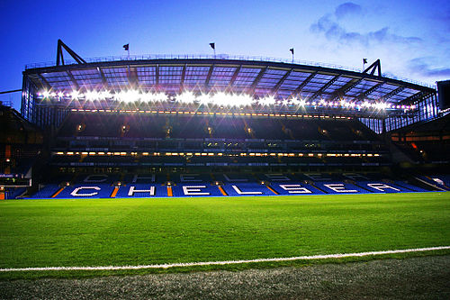

Welcome To The World Of Chelsea Football Club
Chelsea Football Club is a professional football club in London, England, that competes in the Premier League. Founded in 1905, the club's home ground since then has been Stamford Bridge.[4] Chelsea won the First Division title in 1955, followed by various cup competitions between 1965 and 1971. The past two decades have seen sustained success, with the club winning 23 trophies since 1997.[5] In total, the club has won 28 major trophies; six titles, eight FA Cups, five League Cups and four FA Community Shields, one UEFA Champions League, two UEFA Cup Winners' Cups, one UEFA Europa League and one UEFA Super Cup.[6][7][8] Chelsea's regular kit colours are royal blue shirts and shorts with white socks. The club's crest has been changed several times in attempts to re-brand the club and modernise its image. The current crest, featuring a ceremonial lion rampant regardant holding a staff, is a modification of the one introduced in the early 1950s.[9] The club have the sixth-highest average all-time attendance in English football,[10] and for the 2017–18 season at 41,280.[11] Since 2003, Chelsea have been owned by Russian billionaire Roman Abramovich.[12] In 2018, they were ranked by Forbes magazine as the seventh most valuable football club in the world, at £1.54 billion ($2.06 billion) and in the 2016–17 season it was the eighth highest-earning football club in the world, having earned €428 million.[13][14]
History Of Chelsea
In 1904, Gus Mears acquired the Stamford Bridge athletics stadium with the aim of turning it into a football ground. An offer to lease it to nearby Fulham was turned down, so Mears opted to found his own club to use the stadium. As there was already a team named Fulham in the borough, the name of the adjacent borough of Chelsea was chosen for the new club; names like Kensington FC, Stamford Bridge FC and London FC were also considered.[15] Chelsea were founded on 10 March 1905 at The Rising Sun pub (now The Butcher's Hook),[2][16] opposite the present-day main entrance to the ground on Fulham Road, and were elected to the Football League shortly afterwards. The club won promotion to the First Division in their second season, and yo-yoed between the First and Second Divisions in their early years. They reached the 1915 FA Cup Final, where they lost to Sheffield United at Old Trafford, and finished third in the First Division in 1920, the club's best league campaign to that point.[17] Chelsea attracted large crowds[18] and had a reputation for signing big-name players,[19] but success continued to elude the club in the inter-war years.
Stadium
Chelsea have only had one home ground, Stamford Bridge, where they have played since the team's foundation. It was officially opened on 28 April 1877 and for the first 28 years of its existence it was used almost exclusively by the London Athletic Club as an arena for athletics meetings and not at all for football. In 1904 the ground was acquired by businessman Gus Mears and his brother Joseph, who had also purchased nearby land (formerly a large market garden) with the aim of staging football matches on the now 12.5 acre (51,000 m²) site.[40] Stamford Bridge was designed for the Mears family by the noted football architect Archibald Leitch, who had also designed Ibrox, Craven Cottage and Hampden Park.[41] Most football clubs were founded first, and then sought grounds in which to play, but Chelsea were founded for Stamford Bridge. Starting with an open bowl-like design and one covered terrace, Stamford Bridge had an original capacity of around 100,000.[40] The early 1930s saw the construction of a terrace on the southern part of the ground with a roof that covered around one fifth of the stand. It eventually became known as the "Shed End", the home of Chelsea's most loyal and vocal supporters, particularly during the 1960s, 70s and 80s. The exact origins of the name are unclear, but the fact that the roof looked like a corrugated iron shed roof played a part.[40]